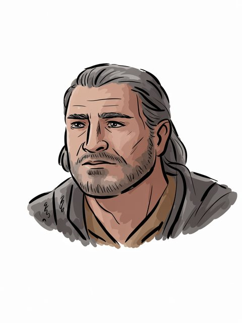

Halmir
Haladin
Haladin (F.A.–F.A. 468)
Open the full record in the living archive →Part of the Arda Archive — a corpus-first index of Tolkien's legendarium; every fact cited, every silence declared.

Haladin
Haladin of Brethila
F.A.–F.A. 468b
GENERATED. Ideogram V3, driven by a prompt written in this archive; no illustrator drew it and it must never be presented as though one had. Ruling 3 asks for the hand and this IS the hand -- 'generated' is an answer, 'unknown' would not be.c
“named Halmir; Halmir in AB 2 was changed to Haldir (V.138 and note”d
“daughter Glóredhel wedded Haldir son of Halmir, lord of the Men of”e
a The text — Silm, tables IV-V (Hador & Haleth) [C]
b The text — HoME XI, the Grey Annals §212: 468 'Haleth gathered his folk in Brethil ... but he died of age ere the war came, and Hundor his son ruled his people' -- the annals name him Haleth the Hunter; the next header is [C]
c The ruling — the owner's ruling of 13 August 2026, on the 552 generated images: 'we are free to use them'. That settles the LICENCE and does not settle the HAND, which is recorded above as what it is. [C]
d The text — The War of the Jewels · l.5276 [C]
e The text — The Children of Hurin · l.525 [C]
“Maybe would have ravaged even to the mouths of Sirion; but Halmir”f
The name stands in 87 cited lines, in 14 of the corpus's 192 texts — most often in The War of the Jewels (28), Index (13), The Silmarillion (8).g
of Haladin; in Brethil; child of Haldan; father or mother of Haldir, Hareth, Hundar, Hiril; F.A.–F.A. 468.h
Haldir (28), Orodreth (15), Orodreth (15), Hareth (11) — a shared line is a fact about the line, not a claim that the two met.i
recorded by-names for this figure — searched over 47 worked sets in site/arda_epithets.json, and nothing was found.j
f The text — The Silmarillion · l.7789 [C]
g Counted — site/arda_apparatus.json [C]
h The table — Silm, tables IV-V (Hador & Haleth) [C]
i Counted — site/arda_apparatus.json [C]
j The search — site/arda_apparatus.json [C]
Haladin (F.A.–F.A. 468)
Open the full record in the living archive →